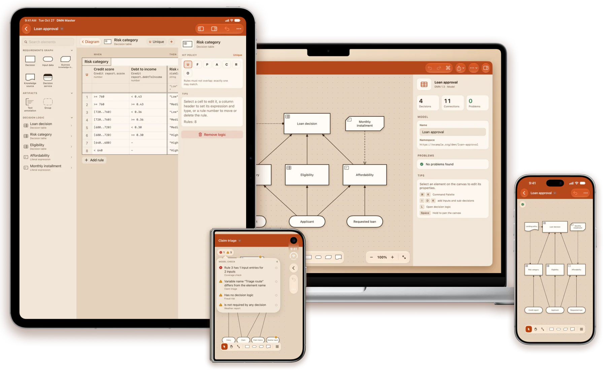
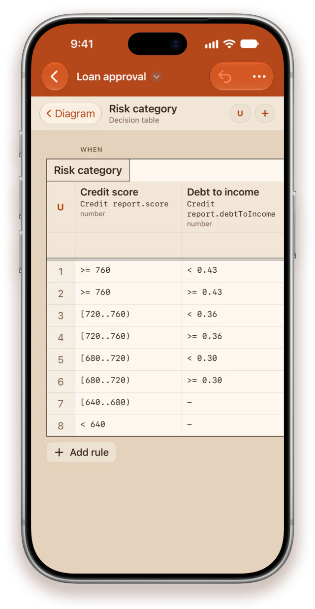
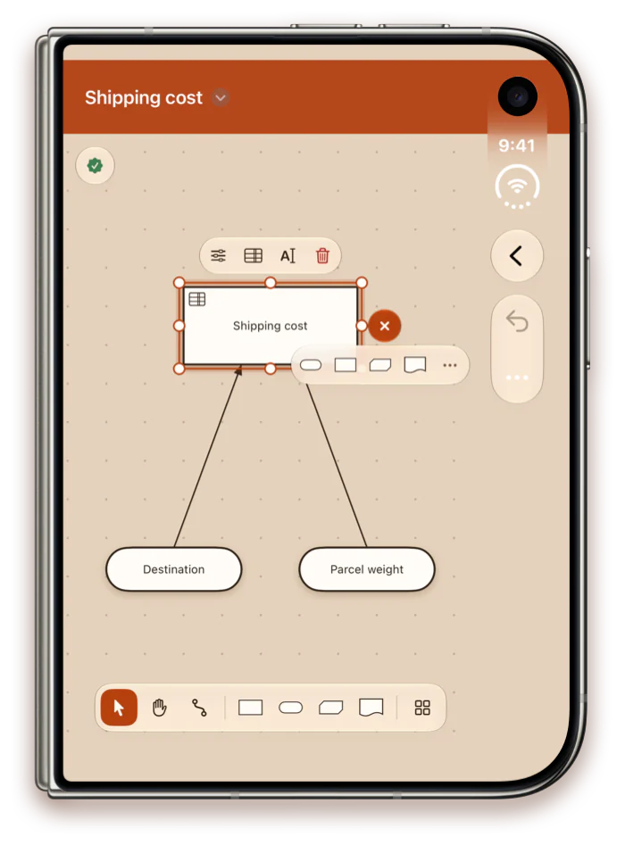
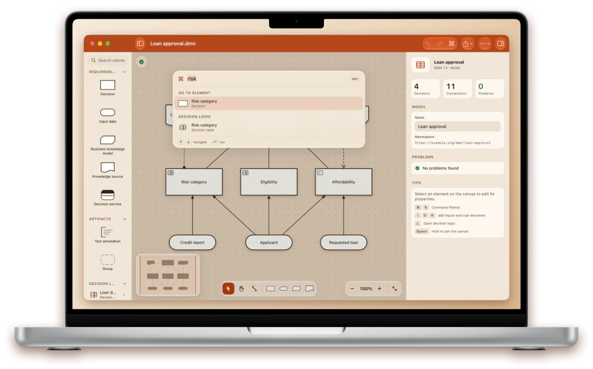
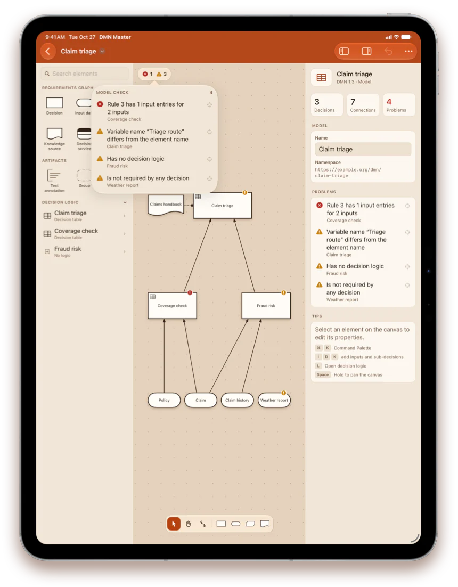
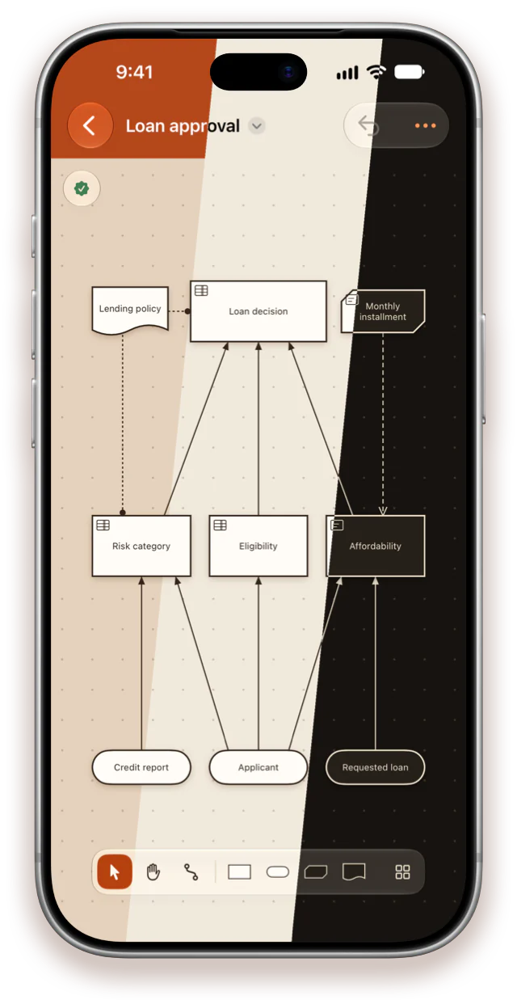

DMN editor
Decision models, native on iPhone, iPad and Mac
Draw the decision requirements diagram, fill in the decision tables and check the model as you go — then save a standard .dmn file that other DMN tools open as it was, plus your changes.
For iOS 18, iPadOS 18 and macOS 15 or later

Decision tables
Edit rules like a spreadsheet
Tap a cell and type. Every cell is a FEEL text field, Return moves down, and the columns resize by dragging their edge.
- Add, duplicate, move and delete rules, inputs, outputs and annotations
- Every hit policy, chosen from a grid that explains each one
- Literal expressions in a monospaced editor, with their result type

Quick create
Grow the model tap by tap
Select an element and tap “+” beside it: the app offers only what can be connected to it, and the new element arrives connected, placed clear of what is drawn there.
- Each connection is the requirement the notation allows
- Or drag an element from the library onto the canvas
- With a keyboard, select a decision and type I I K to give it two inputs and a knowledge model

Made for Mac
Every action is a ⌘K away
One search field for every command, every element type and every decision and table of your model, ranked as you type.
- Menus, keyboard shortcuts for every tool, printing and a minimap
- Library, canvas and properties side by side
- Press Space on a .dmn file in Finder to preview the model with Quick Look

Model check
Catch modeling mistakes early
The model is checked while you edit, and problems are marked right on the canvas. Tap one in the list to jump straight to it.
- Broken references, forbidden requirements and requirement cycles
- Decisions without logic and input data nothing uses
- Decision tables whose rules do not match their columns

Three themes
Terracotta, Light or Dark
Terracotta takes its colours from the app icon: a terracotta bar and a warm clay canvas. Light is bright paper; Dark is espresso with cream lines.
- Switch at any time in Settings — it applies instantly
- Exported images, PDFs and printouts always use the light paper look

Everything DMN
A real editor, not a viewer
The full notation
Decisions, input data, knowledge models, knowledge sources, decision services, annotations and groups, with every requirement drawn as the specification draws it.
Your files stay intact
DMN 1.1 to 1.5. Item definitions, imports, other tools' extensions and the text of every expression survive a save untouched.
Files without a layout
A model saved with no diagram opens with a generated layout: inputs below, decisions above, the arrows pointing up.
Share and print
Export to PNG and PDF — the PDF holds the diagram and every decision table — print, and view the XML source.
Private and offline
No account, no tracking, no network. Models are ordinary files in storage you already use.
Seven languages
English, German, French, Ukrainian, Spanish, Japanese and Portuguese, switched without a restart.
Start with a single decision
One app for iPhone, iPad and Mac.